rayleigh_sonic_inverse
Calculates the subsonic and supersonic solutions for the local Mach number in a Rayleigh flow given some ratio or difference between local and sonic conditions.
Back to Compressible Flow Toolbox Contents
Contents
Syntax
[M_sub,M_sup] = rayleigh_sonic_inverse('T/T*',T_Tstar) [M_sub,M_sup] = rayleigh_sonic_inverse('P/P*',P_Pstar) [M_sub,M_sup] = rayleigh_sonic_inverse('rho/rho*',rho_rhostar) [M_sub,M_sup] = rayleigh_sonic_inverse('U/U*',U_Ustar) [M_sub,M_sup] = rayleigh_sonic_inverse('a/a*',a_astar) [M_sub,M_sup] = rayleigh_sonic_inverse('h/h*',h_hstar) [M_sub,M_sup] = rayleigh_sonic_inverse('Tt/Tt*',Tt_Ttstar) [M_sub,M_sup] = rayleigh_sonic_inverse('Pt/Pt*',Pt_Ptstar) [M_sub,M_sup] = rayleigh_sonic_inverse('rhot/rhot*',rhot_rhotstar) [M_sub,M_sup] = rayleigh_sonic_inverse('at/at*',at_atstar) [M_sub,M_sup] = rayleigh_sonic_inverse('ht/ht*',ht_htstar) [M_sub,M_sup] = rayleigh_sonic_inverse('(s-s*)/cp',ds_cp) [M_sub,M_sup] = rayleigh_sonic_inverse(__,gamma)
Input/Output Parameters
| Symbol | Variable | Description | Format | |
| Input | - | spec | specifies input quantity (see options below) | 1×1 char |
| Q_in | input quantity | 1D double array |
||
| gamma | (OPTIONAL) specific heat ratio, defaults to 1.4 | 1×1 double |
||
| Output | M_sub | subsonic solution for local Mach number | 1D double array |
|
| M_sup | supersonic solution for local Mach number | 1D double array |
Options for spec:
- 'T/T*' = local-to-sonic static temperature ratio (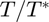)
- 'P/P*' = local-to-sonic static pressure ratio (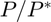)
- 'rho/rho*' = local-to-sonic density ratio (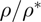)
- 'U/U*' = local-to-sonic velocity ratio (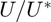)
- 'a/a*' = local-to-sonic speed of sound ratio (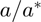)
- 'h/h*' = local-to-sonic static enthalpy ratio (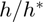)
- 'Tt/Tt*' = local-to-sonic stagnation temperature ratio (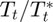)
- 'Pt/Pt*' = local-to-sonic stagnation pressure ratio (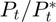)
- 'rhot/rhot*' = local-to-sonic stagnation density ratio (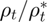)
- 'at/at*' = local-to-sonic stagnation speed of sound ratio (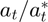)
- 'ht/ht*' = local-to-sonic stagnation enthalpy ratio (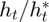)
- '(s-s*)/cp' = sonic-to-local nondimensional entropy change (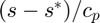)
Examples
Local Mach number from local-to-sonic ratios in a Rayleigh flow in air (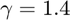). Note that all values are taken from the examples in the rayleigh_sonic documentation.
Local Mach number (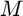) from local-to-sonic static temperature ratio ().
[M_sub,M_sup] = rayleigh_sonic_inverse('T/T*',0.2803)
M_sub = 0.238106782919658 M_sup = 2.999854542259840
Local Mach number () from local-to-sonic static pressure ratio ().
[M_sub,M_sup] = rayleigh_sonic_inverse('P/P*',0.1765)
M_sub = NaN M_sup = 2.999730191563444
Local Mach number () from local-to-sonic static density ratio ().
[M_sub,M_sup] = rayleigh_sonic_inverse('rho/rho*',0.6296)
M_sub = 0.999999999999545 M_sup = 3.000960461045896
Local Mach number () from local-to-sonic velocity ratio ().
[M_sub,M_sup] = rayleigh_sonic_inverse('U/U*',1.5882)
M_sub = NaN M_sup = 2.999546759326620
Local Mach number () from local-to-sonic speed of sound ratio ().
[M_sub,M_sup] = rayleigh_sonic_inverse('a/a*',0.5294)
M_sub = 0.238089034885434 M_sup = 3.000078162480936
Local Mach number () from local-to-sonic static enthalpy ratio ().
[M_sub,M_sup] = rayleigh_sonic_inverse('h/h*',0.2803)
M_sub = 0.238106782919658 M_sup = 2.999854542259840
Local Mach number () from local-to-sonic stagnation temperature ratio ().
[M_sub,M_sup] = rayleigh_sonic_inverse('Tt/Tt*',0.6540)
M_sub = 0.475204365203808 M_sup = 2.999773353101604
Local Mach number () from local-to-sonic stagnation pressure ratio ().
[M_sub,M_sup] = rayleigh_sonic_inverse('Pt/Pt*',3.4245)
M_sub = NaN M_sup = 3.000015888975860
Local Mach number () from local-to-sonic stagnation density ratio ().
[M_sub,M_sup] = rayleigh_sonic_inverse('rhot/rhot*',5.2363)
M_sub = 0.236490502458309 M_sup = 2.999994144254102
Local Mach number () from local-to-sonic stagnation speed of sound ratio ().
[M_sub,M_sup] = rayleigh_sonic_inverse('at/at*',0.8087)
M_sub = 0.475201582961290 M_sup = 2.999820401368333
Local Mach number () from local-to-sonic stagnation enthalpy ratio ().
[M_sub,M_sup] = rayleigh_sonic_inverse('ht/ht*',0.6540)
M_sub = 0.475204365203808 M_sup = 2.999773353101604
Local Mach number () from sonic-to-local nondimensional entropy change ().
[M_sub,M_sup] = rayleigh_sonic_inverse('(s-s*)/cp',-0.7764)
M_sub = 0.373059245726381 M_sup = 3.000058058992373